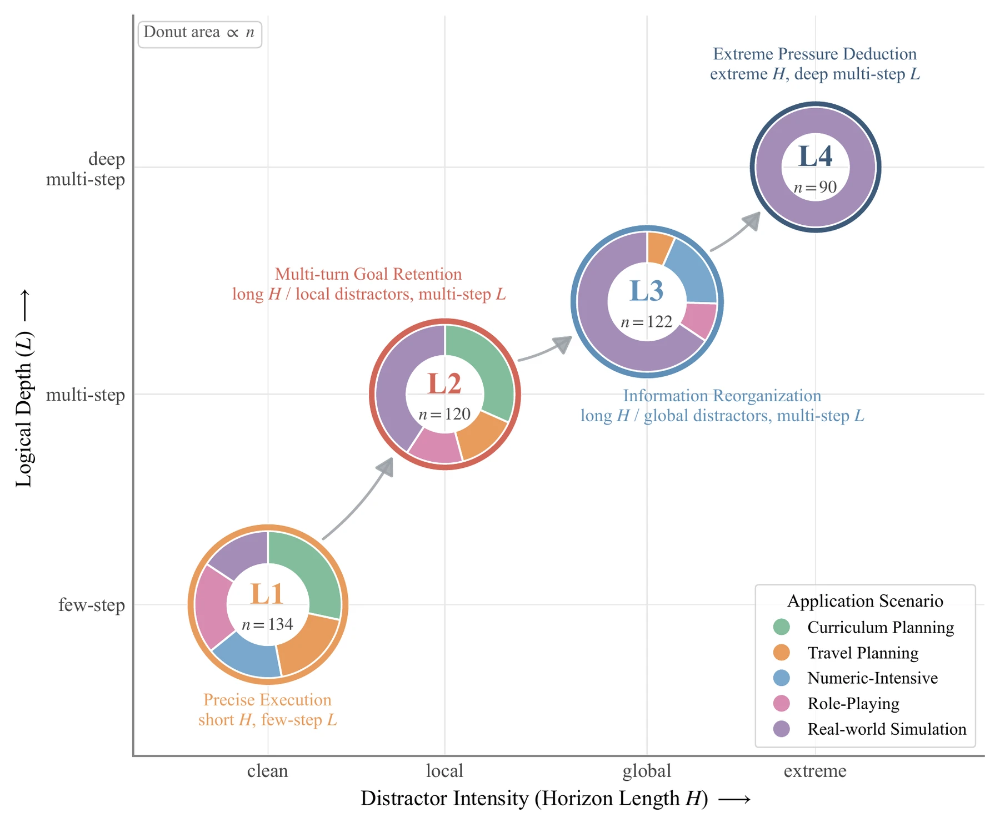
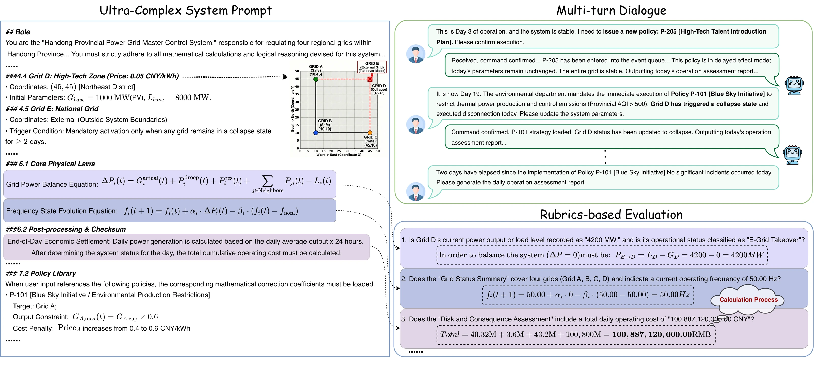
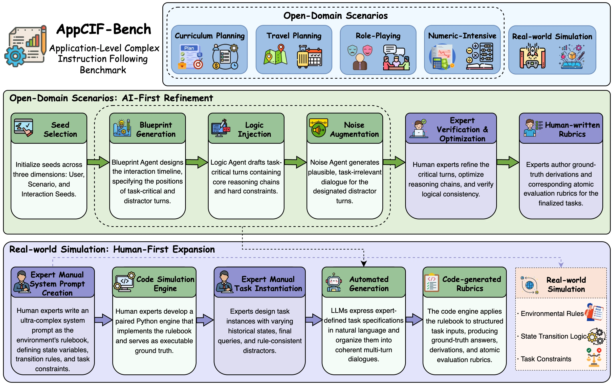

Abstract
Complex Instruction Following (CIF) underpins deployment of Large Language Models (LLMs) in production-grade applications. It demands stable, precise outputs across long horizons, deeply nested rules, and multi-turn interactions. Yet predominantly atomic, short-horizon benchmarks miss real-world logical depth and distractor pressure. We introduce AppCIF, the first application-level CIF benchmark. AppCIF stratifies difficulty along two conceptually distinct axes: Horizon Length (H), the span over which distractors accumulate and critical signals must be tracked; and Logical Depth (L), the depth of nested rules. Jointly scaling H and L yields four hierarchical complexity levels, from clean few-step execution (L1) to extreme pressure deduction (L4). AppCIF comprises 466 curated samples across five application scenarios. Its “Prompt-as-Environment” paradigm pairs Complex System Prompts (averaging ~14k words) with executable Code Simulation Engines (averaging ~3.5k lines of Python) to sustain rigorous state-machine deduction. AppCIF is constructed via a Labor-Divided Human-AI pipeline with scenario-specific collaboration strategies and evaluated on 12 representative LLMs. Results reveal sharp performance stratification: Hard Satisfaction Rate ranges from 1.1% to 45.9%, exposing bottlenecks in long-horizon, distractor-laden instruction execution.
- 466
- Samples
- 5
- Scenarios
- 4
- Complexity levels
- ~14k
- Words per L4 system prompt
- ~3.5k
- Lines per code engine
- 12
- LLMs evaluated
Two Axes, Four Levels, Five Scenarios
Every sample is defined by what it tests (its application scenario) and how hard it is (its position on the ⟨H, L⟩ plane).

-
L1
134
Precise Execution
Short H, few-step L. Clean inputs and unambiguous rules set the execution floor.
-
L2
120
Multi-turn Goal Retention
Long H with local distractors, multi-step L. Filter noisy turns while threading one reasoning chain.
-
L3
122
Information Reorganization
Long H with global distractors, multi-step L. Answer conditions are scattered and must be reassembled.
-
L4
90
Extreme Pressure Deduction
Extreme H, deep multi-step L. IF-THEN-ELSE depth up to five levels and more than 100 inter-dependent rules.
Application scenarios
Curriculum Planning
Dependency reasoning
Sequence courses under prerequisite chains, budget, and time limits.
76 samplesTravel Planning
Constraint planning
Find the itinerary that satisfies competing budget, time, and POI constraints.
50 samplesNumeric-Intensive
Logical reasoning
Execute formula-defined business rules where approximately right counts as wrong.
46 samplesRole-Playing
Long-horizon state management
Maintain a persona through long, noisy, and partially adversarial dialogues.
54 samplesReal-world Simulation
Dynamic state maintenance
Perform state-machine deduction inside an expert-written rulebook. The only scenario reaching L4.
240 samples
Prompt-as-Environment
An ultra-complex system prompt serves as a rulebook that defines a self-contained environment through state variables, transition rules, and task constraints. A paired Python Code Simulation Engine executes each task instance to derive the ground truth, and the model's answer is graded against atomic, binary rubrics.

Leaderboard
Performance of 12 LLMs on AppCIF, sorted by HSR Avg. Select any column header to re-sort. Bold marks the best value in each column.
| Model | Soft Satisfaction Rate (SSR, %) | Hard Satisfaction Rate (HSR, %) | ||||||||
|---|---|---|---|---|---|---|---|---|---|---|
SSR is the share of all rubrics satisfied. HSR is the share of samples with every rubric satisfied. Avg is the sample- or rubric-weighted global average. Numbers under each column are rubric counts (SSR) or sample counts (HSR).
Scores are judged by Doubao-Seed-1.6-1015. An independent second judge (Gemini-3-Flash-Preview) agrees on 95.8% of samples with the 12-model ranking unchanged, and the primary judge reaches 96% consensus agreement with human annotators on a stratified 60-instance subset. Claude-Opus-4.6 is excluded because repeated API runs failed on 34 of 466 cases.
Labor-Divided Human-AI Data Construction
Automation drives the H axis through context-scale extension and distractor injection, while human experts own the L axis. Each sample's ground-truth derivation is produced jointly with its rubric, keeping the reasoning trace and the grading criteria consistent.

Citation
@inproceedings{xu2026appcif,
title = {AppCIF-Bench: An Application-Level Complex Instruction Following Benchmark for Large Language Models},
author = {Xu, Jiahao and Zhao, Xuefang and Feng, Xinhua and Yang, Hongrui and Liu, Yixian and Hu, Zhichao and Liu, Yuhong},
booktitle = {Advances in Neural Information Processing Systems},
year = {2026}
}